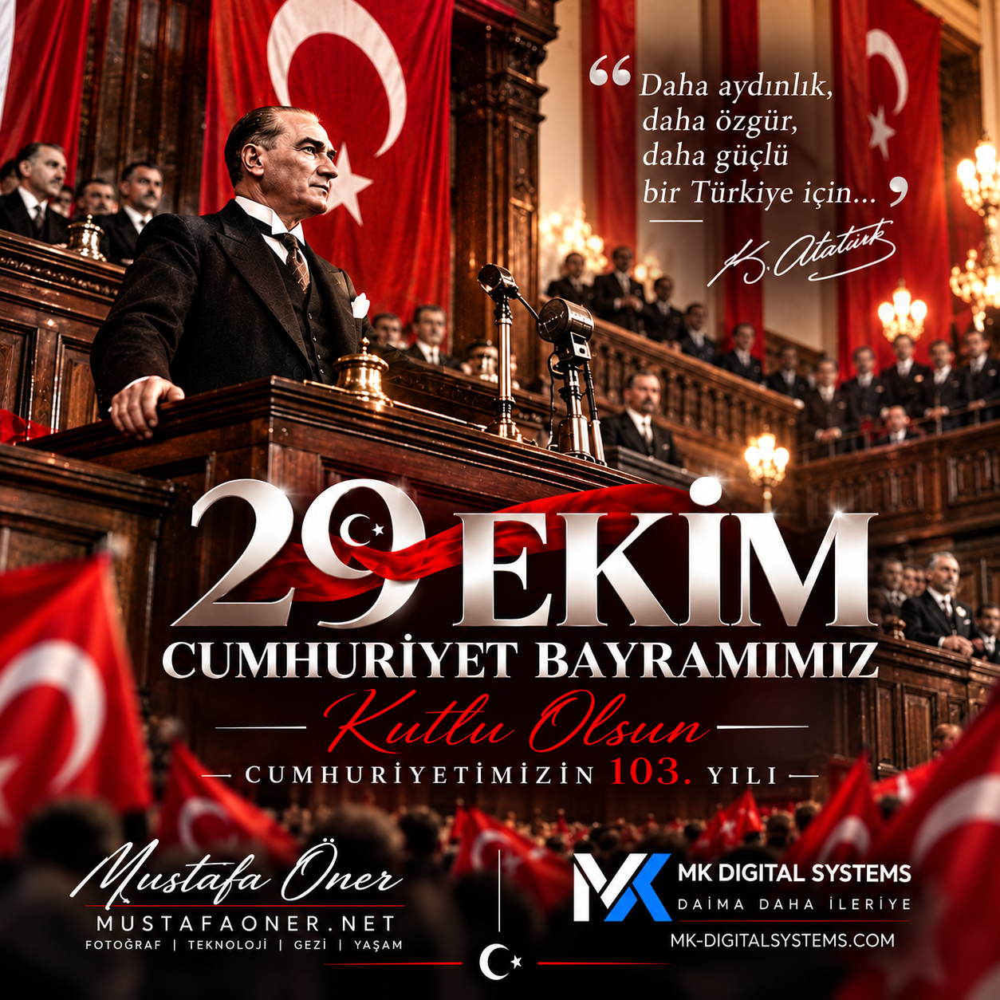

Bağımsız önizleme
29 Ekim 2026
Cumhuriyet Bayramı
Karşılama kapandıktan sonra sağ alttaki küçük bayrağa dokunarak yeniden açabilirsiniz.
Canlı kullanımda ekran yalnızca 29 Ekim 2026 tarihinde, Türkiye saatiyle gösterilir.
Bağımsız önizleme
Karşılama kapandıktan sonra sağ alttaki küçük bayrağa dokunarak yeniden açabilirsiniz.
Canlı kullanımda ekran yalnızca 29 Ekim 2026 tarihinde, Türkiye saatiyle gösterilir.
